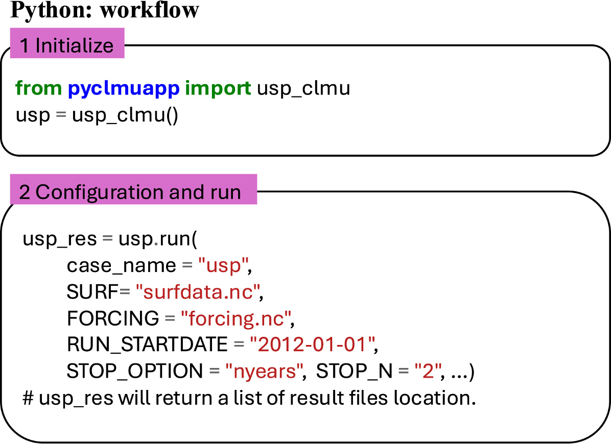

Warmup
Fisrt of all, make sure you have installed Docker.
workflow
1 Initailize
Before initialization, we need to pull the docker image.
for Linux and MacOS : use docker pull envdes/clmu-app:1.1 or pyclmuapp --has_container False --container_type docker --init True in command line.
for Windows: pull the image envdes/clmu-app:1.1 manually from Docker Desktop
[1]:
from pyclmuapp import usp_clmu
# initialize
usp = usp_clmu() # will create a temporary working directory workdir
# can use pwd to specify the working directory
#, e.g. usp_clmu(pwd="/path/to/working/directory"), default is the current working directory
Using ups_clmu() will initiate the usp_clmu class. The class will take the following parameters:
The inputfolder, outputfolder, logfolder, and scriptfolder will be checked in the current working directory.
If the folder does not exist, it will be created.
User can specify the folders by using the inputfolder, outputfolder, logfolder, and scriptfolder parameters.
Inputfolder, outputfolder, logfolder, and scriptfolder parameters are optional.
2 Run a simulation
[ ]:
usp_res = usp.run(
case_name = "usp_spinup",
SURF="surfdata.nc",
FORCING="forcing.nc",
RUN_STARTDATE = "2002-01-01", # the start date of the simulation, must include in the forcing file time range
STOP_OPTION = "nyears", # can be 'ndays', 'nmonths', 'nyears', 'nsteps'; nsteps means 1800s
STOP_N = "10", # run for 10 years
#RUN_TYPE= "coldstart", # coldstart is the default option
)
usp_res
parameters of usp.run
output_prefix (str) – The output file name. The default is “_clm.nc”. if the output_prefix is none, the output file name will not be changed.
case_name (str) – The case name. The default is “usp_case”.
RUN_STARTDATE (str) – The start date of the run. The default is “2012-08-08”.
START_TOD (str) – The start time of the day. The default is “00000”.
STOP_OPTION (str) – The stop option. The default is “ndays”.
STOP_N (str) – The number of days to run. The default is “10”.
ATM_DOM (str) – The path to the domain data file. Will use the domain data provided by the user. The default is None.
SURF (str) – The path to the surface data file. Will use the surface data provided by the user. The default is None.
FORCING (str) – The path to the forcing data file. Will use the forcing data provided by the user. The default is None.
RUN_TYPE (str) – The type of the run. The default is “coldstart”. The other option is “branch”.
RUN_REFCASE (str) – The reference case. The default is “None”. Need to be provided when the RUN_TYPE is “branch”.
RUN_REFDATE (str) – The reference date. The default is “None”. Need to be provided when the RUN_TYPE is “branch”.
RUN_REFTOD (str) – The reference time of the day. The default is “00000”. Need to be provided when the RUN_TYPE is “branch”.
password (str) – The password for the docker. The default is “None”. Need to be provided when server is needed.
iflog (bool) – The flag to log the output. The default is True.
logfile (str) – The log file name. The default is pwd+”pyclmuapprun.log”.
hist_type (str): The type of the history file. The default is “GRID”. valid_values=”GRID”,”LAND”,”CLOS”.
hist_nhtfrq (int): The frequency of the history output. The default is 1.
hist_mfilt (int): The filter for the history output. The default is 1000000000.
urban_hac (str) – The flag to turn on the urban HAC. The default is “ON_WASTEHEAT”. valid_values=”OFF”,”ON”,”ON_WASTEHEAT”.
run_tyep (str) – The type of the run. The default is “usp”. or use “usp-execp” to run when container is started.
3 How to get your own input files?
For surface data: Make your own surface data.
For forcing data: Make your own forcing data from ERA5.publish_display_data
3 How to change the surface and forcing data?
If we have run a simulation using the
uspobject, the forcing data path is stored in theusp.usr_forcing_fileattribute, the surface data path is stored in theusp.surfdataattribute, we can modify the forcing data by calling theusp.modify_forcingmethod and modify the surface data by calling theusp.modify_surfmethod, and run the simulation again using theusp.runmethod.If there is no forcing data path provided or have not run a simulation using the
uspobject, check the forcing, by callingusp.check_forcing(usr_forcing="forcing.nc")methodIf there is no surface data path provided or have not run a simulation using the
uspobject, check the surface, by callingusp.check_surf(usr_surf="sufdata.nc")method
For example,
# for modifying the surface data with adding 0.2 to ALB_ROOF_DIR
usp.modify_surf(action={"ALB_ROOF_DIR":0.2}, surfata_name="surface_modfied.nc", mode="add")
# for modifying the forcing data with adding 1.0 to Tair
usp.modify_forcing(action={"Tair": 1}, mode="add", forcing_name="forcing_replaced.nc")
Variables of surface data can be directly modified by ``usp.modify_surf()``
Variables |
Long name |
Type |
Unit |
|---|---|---|---|
CANYON_HWR |
Canyon height to width ratio |
Morphological |
Unitless |
HT_ROOF |
Height of roof |
Morphological |
Meters |
THICK_ROOF |
Thickness of roof |
Morphological |
Meters |
THICK_WALL |
Thickness of wall |
Morphological |
Meters |
WTLUNIT_ROOF |
Fraction of roof |
Morphological |
Unitless |
WTROAD_PERV |
Fraction of pervious road |
Morphological |
Unitless |
WALL_TO_PLAN_AREA_RATIO |
Ratio of wall area to plan area |
Morphological |
Unitless |
WIND_HGT_CANYON |
Height of wind in canyon |
Morphological |
Meters |
NLEV_IMPROAD |
Number of impervious road layers |
Morphological |
Unitless |
TK_ROOF |
Thermal conductivity of roof |
Thermal |
W/m*k |
TK_WALL |
Thermal conductivity of wall |
Thermal |
W/m*k |
TK_IMPROAD |
Thermal conductivity of impervious road |
Thermal |
W/m*k |
CV_ROOF |
Volumetric heat capacity of roof |
Thermal |
J/m^3*k |
CV_WALL |
Volumetric heat capacity of wall |
Thermal |
J/m^3*k |
CV_IMPROAD |
Volumetric heat capacity of impervious road |
Thermal |
J/m^3*k |
EM_IMPROAD |
Emissivity of impervious road |
Radiative |
Unitless |
EM_PERROAD |
Emissivity of pervious road |
Radiative |
Unitless |
EM_ROOF |
Emissivity of roof |
Radiative |
Unitless |
EM_WALL |
Emissivity of wall |
Radiative |
Unitless |
ALB_IMPROAD_DIR |
Direct albedo of impervious road |
Radiative |
Unitless |
ALB_IMPROAD_DIF |
Diffuse albedo of impervious road |
Radiative |
Unitless |
ALB_PERROAD_DIR |
Direct albedo of pervious road |
Radiative |
Unitless |
ALB_PERROAD_DIF |
Diffuse albedo of pervious road |
Radiative |
Unitless |
ALB_ROOF_DIR |
Direct albedo of roof |
Radiative |
Unitless |
ALB_ROOF_DIF |
Diffuse albedo of roof |
Radiative |
Unitless |
ALB_WALL_DIR |
Direct albedo of wall |
Radiative |
Unitless |
ALB_WALL_DIF |
Diffuse albedo of wall |
Radiative |
Unitless |
T_BUILDING_MIN |
Minimum interior building temperature |
Indoor |
K |
Variables of forcing data can be directly modified by ``usp.modify_ forcing()``
Variable |
Long name |
Unit |
|---|---|---|
Zbot |
Measurement height above ground |
Meters |
Prectmms |
Precipitation rate |
kg/m²/s |
Wind |
Wind speed |
m/s |
LWdown |
Downward longwave radiation at measurement height |
W/m² |
PSurf |
Air pressure at measurement height |
Pa |
Qair |
Specific humidity at measurement height |
kg/kg |
Tair |
Air temperature at measurement height |
K |
SWdown |
Downward shortwave radiation at measurement height |
W/m² |
Optional input method
[ ]:
%%time
# check surface
usp.check_surf(usr_surf="sufdata.nc") # use the default surface data of London
# check the domain
usp.check_domain()
# check the forcing
# this forcing derived from urban-plumber forcing data
usp.check_forcing(usr_forcing="forcing.nc")
usp_res = usp.run(
case_name = "usp_spinup",
RUN_STARTDATE = "2002-01-01",
STOP_OPTION = "nyears",
STOP_N = "10",
#RUN_TYPE= "coldstart", # coldstart is the default option
)
usp_res
Optional run way
[ ]:
from pyclmuapp import usp_clmu
# initialize
usp = usp_clmu()
# run the docker image
usp.docker("run")
usp_res = usp.run(
case_name = "usp_spinup",
SURF="surfdata.nc",
FORCING="forcing.nc",
RUN_STARTDATE = "2002-01-01",
STOP_OPTION = "nyears",
STOP_N = "10",
#RUN_TYPE= "coldstart", # coldstart is the default option
crun_type="usp-exec" # this is to run the container when the docker image is used
)
# stop the docker image and remove it
usp.docker("stop")
usp.docker("rm")
additonal information
usp.check_surf() will show what is available in the surfdata_dict.
to see what care mainly contained in surfdata.
surf = usp.check_surf()
print(surf)
Args:
usr_surfdata (str): The path to the user-defined surface data file. The default is None.
surfata_name (str): The name of the surface data file. The default is “surfdata.nc”.
Please check below output to see:
what kind of urban parameter will need to run the single point model
The values list indicates different paramter in different level
list of albedo indicate the albedo of visable and invisable solar bands (VIS,NIR)
list of thermal paramters indicates the layer
usp.check_domain()
if you have your domain file, use usp.check_domain(usr_domain=your-filepath)
other parameters:
usr_domain (str): The path to the user-defined domain data file. The default is None,which - means using the default domain data (UK-Kin site).
lat (float): The latitude of the domain. The default is None. Provide it to change to your interest point.
lon (float): The longitude of the domain. The default is None. Provide it to change to your interest point.
check the forcing file
usp.check_forcing
we need to provdie our own forcing data
if the forcing file is not in inputfolder/usp, then it will be copied to the inputfolder/usp
Args:
usr_forcing (str): The path to the user-defined forcing data file. The default is None.
action (dict): The dictionary of the revised forcing data for the urban surface parameters. The default is None, which means no action.
mode (str): The mode for the revision. The default is “add”.
forcing_name (str): The name of the revised forcing data file. The default is “forcing.nc”.
the forcing should be included:
Zbot : Measurement height above ground m
Prectmms : Precip_rate kg/m2/s
Wind : Wind m/s
LWdown : Downward longwave radiation at measurement height W/m2
PSurf : Air pressure at measurement height Pa
Qair : Specific humidity at measurement height, Kg/Kg
Tair : Air temperature at measurement height K
SWdown : Downward shortwave radiation at measurement height W/m2
Note:
Wind=sqrt(Wind_N^2 + Wind_E^2 )
Prectmms=Snow+Rain
Make sure the forcing file is same as the protocols of CLM